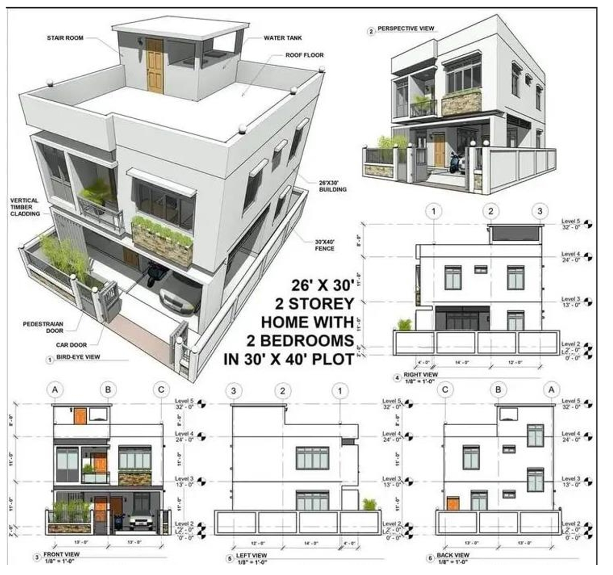
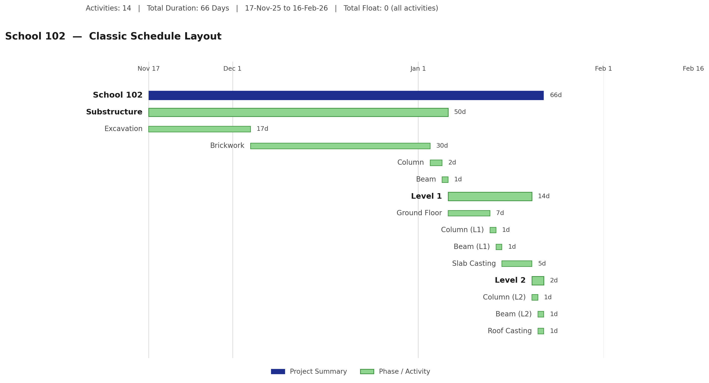

Residential Building Structural Framing & Schedule

A 26 ft × 30 ft, two story, two bedroom residential building on a 30 ft × 40 ft lot in Charlotte, NC. I worked independently to translate the architectural design into a structural framing model and a full construction schedule.

The structural framing model was built in Revit across four elevation datums: footing at -10 ft, first level framing at 0 ft, second level at +10 ft, and the roof at +20 ft. Establishing consistent column and beam layout across each level was central to keeping the framing coordinated top to bottom.

The construction schedule was sequenced in Primavera P6 across 66 total days: a 50 day substructure phase (17 day excavation, 30 day brickwork, columns and beams), a 14 day Level 1 phase, and a 2 day Level 2 phase. Every activity carried zero total float, meaning the sequence had no slack anywhere in the schedule.
Project Overview
This class assignment placed me in the role of project manager for a residential building project, responsible for developing both the structural framing model and the construction schedule independently. The scope covered a 26 ft × 30 ft, two story, two bedroom residential building on a 30 ft × 40 ft lot in Charlotte, NC, based on architectural drawings provided by the assignment.
Design Considerations
The framing had to be coordinated across four elevation datums, from the footing at -10 ft up to the roof at +20 ft, while the schedule had to sequence substructure work before either above grade level could begin. Every activity needed a realistic duration and dependency structure so the overall 66 day schedule reflected an actual buildable sequence rather than an arbitrary timeline.
Design Approach
I broke the project into three construction phases, substructure, Level 1, and Level 2, and modeled each phase's structural elements in Revit while sequencing the corresponding activities in Primavera P6. Excavation and brickwork were scheduled as the longest substructure activities, since they governed how quickly the framing above could start.
Project Summary
This project demonstrates my ability to work independently across two different tools, structural modeling in Revit and construction scheduling in Primavera P6, and connect them into one coordinated deliverable. It reflects a project management perspective on structural design, where the framing decisions and the schedule that builds them have to be considered together.